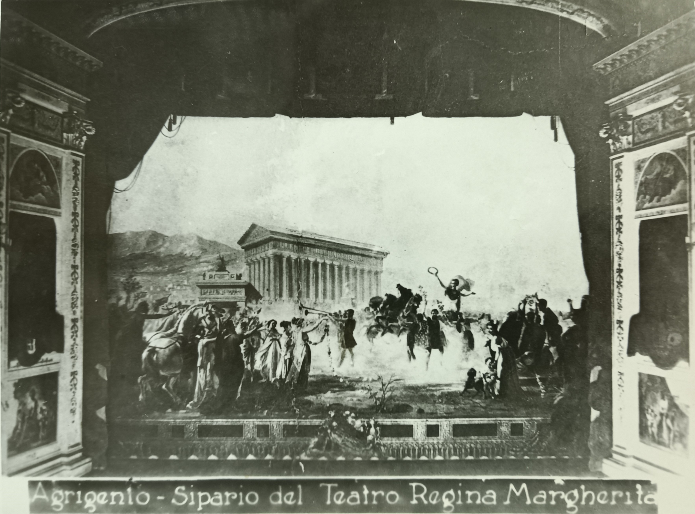
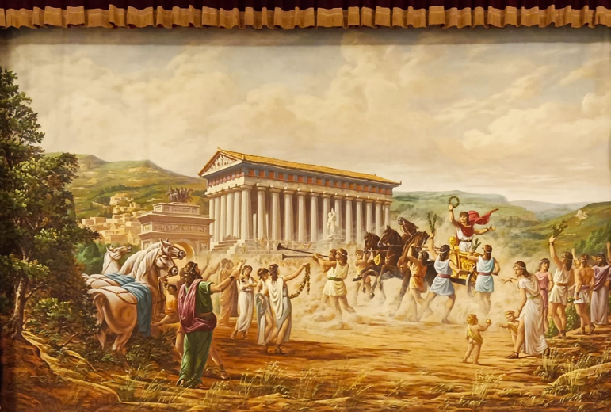

Il sipario storico del Teatro “Luigi Pirandello”, realizzato dal Luigi Queriau nel 1789, versava in cattivo stato di conservazione già nei primi decenni del XX secolo. Le ultime notizie sul sipario risalgono al 1956 e furono fornite dallo storiografo Alessandro Giuliana Alajmo nell’opera Storia di Sicilia nei sipari dipinti nei teatri dell’Isola. Scrive Giuliana Alajmo che «Per effetto dell’umidità esistente nel palcoscenico e per il genere della pittura (tempera) il bellissimo sipario è andato a male ed occorre un efficace restauro». Molto probabilmente, dunque, il sipario realizzato da Queriau, fu rimosso dopo il 1956 a causa delle pessime condizioni nelle quali versava e dei costi che occorreva affrontare per il suo restauro. Per rivedere un nuovo sipario nel teatro agrigentino occorrerà attendere circa cinquant'anni. Nel 2006, infatti, il noto regista e impresario teatrale di origine agrigentina Francesco Bellomo, già Direttore artistico del teatro “Luigi Pirandello”, donò alla città di Agrigento un nuovo sipario nel quale è raffigurata la stessa scena del sipario storico realizzato da Luigi Queriau nel 1879. Seppur con qualche differenza,il sipario donato da Bellomo raffigura l’atleta akragantino Esseneto che torna vincitore dallo stadio di Elea. Il sipario è stato realizzato dal noto pittore e scenografo teatrale Luciano Proietti, presso il laboratorio di scenografia teatrale “Spazio Scenico” di Roma.

